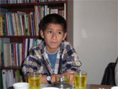
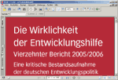
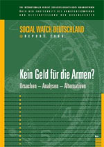

|
Burma: Kampf gegen Staudammprojekte am Salween-River
Petition an die thailändische Regierung |
Für Sitthiporn Ratanopas gibt es bei den Staudammprojekten am Salween- River in Burma nur Gewinner: Thailand bekäme billigen Strom, so der Präsident der Elektrizitätsgesellschaft EGAT, und Burma die benötigten Devisen, die der Militärdiktatur auf Grund internationaler Sanktionen angesichts massiver Menschenrechtsverletzungen fehlen.
Vier große Dämme sollen am Salween-River gebaut werden und über 12.500 Megawatt Strom erzeugen. Die Vorbereitungen sind bereits in vollem Gange.
Für die zahlreichen ethnischen Minderheiten, die am Salween leben, sind die Projekte keineswegs ein Gewinn: Für sie ist der Salween die »heilige Mutter der Flüsse«, und sie wissen, dass sie ohne ihren Reichtum an Pflanzen, Fischen und Feuchtgebieten nicht leben können. Wenn der Rhythmus des Salween gestört wird, werden auch seine Fließgeschwindigkeit, der Nährstoffhaushalt, die Wasserqualität und damit der Fischbestand beeinträchtigt. »Schon ohne den Damm haben wir sehr viele Probleme und müssen kämpfen, um zu überleben«, so ein alter Dorfbewohner vom Volk der Karen. »Ich glaube nicht, dass wir eine Chance haben, wenn der Damm gebaut wird.«
Eine Mitsprache der Flussanwohner bei der Umsetzung der Projekte ist nicht eingeplant. Die burmesischen Militärs halten nicht einmal Entschädigungszahlungen für nötig; sie haben andere Methoden, um Kritik mundtot zu machen: Zwangsarbeit, Vergewaltigung, Vertreibung, Folter, Mord und Abschottung vor der internationalen Öffentlichkeit. Die Menschen am Salween kennen das. Und sie haben Angst.
Viele Dorfgemeinschaften beten zu ihren Flussgöttern, dass ihnen ihr angestammter Lebensraum erhalten bleibe. Anderenfalls bliebe ihnen nur die Flucht in die Lager an der thailändischen Grenze. Hier fördert terre des hommes Gesundheitsstationen und Schulunterricht für die Kinder. Künftig soll auch Rechtsberatung der Flussanwohner organisiert werden – damit sie nicht zu den Verlierern der Staudammprojekte werden.
Unterschriften gegen die Staudammprojekte online unter www.petitiononline.com/9202006
Iris Stolz in: die zeitung 04/2006 (PDF-Download) |
Fachtagung der peruanischen Bewegung arbeitender Kinder Manthoc in Lima vom 22. – 24. November 2006
Kinderarbeiter vertreten ihre Interessen selbst |
Mit einer Fachtagung vom 22. bis 24. November in Lima feiert die peruanische Bewegung arbeitender Kinder MANTHOC ihr 30jähriges Bestehen.
»Manthoc hat Pionierarbeit bei der Selbstorganisation von Kindern geleistet, die eigenständig für ihre Interessen einstehen«, sagte terre des hommes-Programmkoordinator Albert Recknagel, der einst den Kontakt zu Manthoc herstellte. »Die Kinder haben dabei gelernt, selbstbewusst auch etwa gegenüber der peruanischen Regierung aufzutreten. Sie hatten damit auch für uns bei terre des hommes Vorbild- und Vorreiterfunktion.«
Aufsehen erregt hat die Bewegung arbeitender Kinder mit ihrer Forderung nach einem Recht für Kinder, unter würdigen Bedingungen und ohne Ausbeutung arbeiten zu dürfen. In selbst verwalteten Kleinbetrieben und Kooperationsprojekten, wie zum Beispiel mit der Stadtverwaltung von Lima, setzt die peruanische Bewegung dies in die Praxis um. Es geht um Arbeit in eingegrenztem zeitlichem Umfang, die die gesundheitliche und schulische Entwicklung der Kinder nicht beeinträchtigt, ihnen ein Leben in Würde ermöglicht und ihre Zukunftschancen verbessert. Eine von terre des hommes in Auftrag gegebene Untersuchung in einem Armenviertel von Lima bestätigt den Ansatz von Manthoc: Begrenzte Erwerbstätigkeit neben der Schule schadet der kognitiven Entwicklung dieser untersuchten Kinder nicht. Im Gegenteil: Bei der Arbeit erwerben sie wichtige Fähigkeiten, wie Verantwortungsgefühl und Organisationstalent sowie ein Selbstbewusstsein, das im herkömmlichen Schulwesen schwer zu vermitteln ist.
Wirtschaftskrise und Massenentlassungen trieben vor drei Jahrzehnten Kinder aus Arbeiterfamilien, auf die Straßen, um dort ihren Lebensunterhalt zu sichern. In Lima beschloss eine Gruppe, sich zu organisieren und ihre Probleme gemeinsam zu lösen. Heute zählt die Manthoc-Bewegung rund 5000 Mitglieder in 27 Städten Perus, in ganz Peru sind über 12000 arbeitende Kinder organisiert. Die Bewegung war Vorbild für ähnliche Organisationen in Bolivien, Kolumbien, Chile, Paraguay und verschiedenen mittelamerikanischen Ländern. Auch in Afrika sind arbeitende Kinder heute in 50 Städten und 14 Ländern vertreten. In asiatischen Staaten ist das Phänomen weniger verbreitet. Im indischen Bangalore und Karnataka zählt die Bewegung jedoch um die 13000 Mitglieder.
Weitere Informationen:
|
14. Bericht zur Wirklichkeit der Entwicklungshilfe
Deutsche Welthungerhilfe und terre des hommes fordern deutsche "Initiative 07.07.07"
Entwicklungshilfe-Ausgaben nur auf dem Papier enorm gestiegen |
Die Deutsche Welthungerhilfe und terre des hommes fordern die Bundesregierung zu einer deutschen "Initiative 07.07.07" auf. Im kommenden Jahr hat Deutschland die EU-Ratspräsidentschaft und den Vorsitz der G8 inne. Am 7.7.2007 ist "Halbzeit" auf dem Weg zur Verwirklichung der Millenniumsentwicklungsziele, die 2000 von der Staatengemeinschaft beschlossen wurden. Dazu gehört das Ziel, bis 2015 die Zahl der Hungernden und Armen zu halbieren.
In ihrem 14. Bericht über "Die Wirklichkeit der Entwicklungshilfe" kritisieren die Hilfswerke den Anstieg der Entwicklungshilfe-Ausgaben auf rund 0,35 Prozent des deutschen Bruttonationaleinkommens als "Luftnummer": "Die Entwicklungshilfeausgaben sind nur auf dem Papier im Vergleich zum Vorjahr enorm gestiegen. Darin ist zum Beispiel der Schuldenerlass für den Irak und Nigeria eingerechnet. Wenn man die insgesamt knapp drei Milliarden Euro, die verschiedenen Ländern erlassenen wurden, abzieht, zeigt sich, dass 2005 weniger Geld an die Entwicklungsländer gezahlt wurde als im Vorjahr", sagt Peter Mucke, Geschäftsführender Vorstand von terre des hommes.
Die Zusagen an die ärmsten Länder sind 2006 von 542 auf 330 Millionen Euro gesunken. Kritisch bewerten die Hilfswerke auch, dass die Sektoren zu kurz kommen, die für die Armutsbekämpfung zentral sind, wie Ernährungssicherung, Bildung und Gesundheit. Besonders weit hinkt der deutsche Beitrag hinter dem globalen Finanzbedarf im Kampf gegen HIV/AIDS hinterher.
"Wir fordern eine deutsche Initiative 07.07.07 und erwarten einen Stufenplan der Bundesregierung zur wirklichen Aufstockung der Hilfe bis 2015 und eine deutliche Konzentration auf die Förderung von Bildung, Gesundheit und Ernährungssicherung", sagt Hans-Joachim Preuß, Generalsekretär der Deutschen Welthungerhilfe.
Im zweiten Teil der Studie ziehen die Hilfswerke eine erste kritische Bilanz der Budgetfinanzierung zur Armutsbekämpfung. Budgetfinanzierung bedeutet, dass die Geberländer ihre Mittel in den Staatshaushalt der Entwicklungsländer fließen lassen, statt direkt einzelne Projekte zu fördern. Das Instrument funktioniert nur dann, so Welthungerhilfe und terre des hommes, wenn demokratische und zivilgesellschaftliche Instanzen in den Entwicklungsländern kontrollieren können, wie die Mittel verwendet werden. Außerdem dürfe die Budgetfinanzierung andere Formen bewährter Entwicklungshilfe nicht einschränken.
Weitere Infos auf www.tdh.de
|
Kein Geld für die Armen: Der neue Social Watch Report 2006 |
»Kein Geld für die Armen?« lautet der Titel des kürzlich erschienenen Social Watch Deutschland Report 2006. Der Bericht beschäftigt sich mit den Perspektiven der globalen Entwicklungsfinanzierung und der Neugestaltung der internationalen Finanzarchitektur. Ebenso wird im Report untersucht, wie sich Steuer- und Ausgabenpolitik der Bundesregierung auf die soziale Entwicklung in Deutschland auswirken.
Mehr Infos und der Report als Download |
Gemeinsamer Einsatz zur Verbesserung der Gesundheitslage in armen Ländern
Bill-und-Melinda-Gates-Stiftung unterstützt Netzwerk mit 10,7 Millionen Dollar |
Unter dem Namen "European Network for Global Health" hat sich ein Netzwerk von 15 europäischen Nichtregierungsorganisationen gebildet, das sich für einen stärkeren Einsatz der nationalen Regierungen zur Verbesserung der Gesundheitslage in Entwicklungsländern einsetzt.
Darauf hat sich die internationale Staatengemeinschaft in den so genannten Millenniumszielen zwar verpflichtet; nach Ansicht der Mitglieder des Netzwerkes müssen europäische Regierungen jedoch mehr tun und vor allem schnell handeln, damit diese Ziele im vorgegeben Zeitraum auch wirklich erreicht werden.
Dazu zählt, bis zum Jahr 2015 die Müttersterblichkeit um drei Viertel zu senken; auch die Rate der Kindersterblichkeit unter fünf Jahren soll bis dahin um zwei Drittel gesunken sein. Doch immer noch erreichen jedes Jahr 10,6 Millionen Kinder das fünfte Lebensjahr nicht; in manchen Ländern stirbt eine von sechs Frauen wegen Komplikationen in der Schwangerschaft. Auch zur Verringerung der Neuinfektionen mit HIV, Malaria und Tuberkulose ist es noch ein weiter Weg.
Der Schwerpunkt des European Network for Global Health liegt daher darauf, Regierungen, aber auch Nichtregierungsorganisationen und den privaten Sektor, dazu zu bewegen, ihre Maßnahmen im Gesundheitsbereich in den armen Ländern zu verstärken.
In Deutschland werden das Kinderhilfswerk terre des hommes und die Deutsche Welthungerhilfe als Teil des European Network for Global Health auf diesem Gebiet zusammenarbeiten. Koordiniert wird das europäische Netzwerk, das mit 10,7 Millionen Dollar von der Bill-und-Melinda-Gates-Stiftung gefördert wird, von der Nichtregierungsorganisation ActionAID International.
Das Netzwerk beginnt gleichzeitig in Spanien, Italien, Frankreich, Deutschland, Belgien und Großbritannien seine Arbeit mit dem Ziel, ein stärkeres Engagement der Staaten der Europäischen Union im Sinne der Millenniumsziele zu erreichen. Halbzeit für die Erreichung der im Jahre 2000 vereinbarten Millenniumsziele ist der 07. Juli 2007, so dass verstärkte Anstrengungen dringend erforderlich sind.
"Wir wollen der Bundesregierung klarmachen, dass sie viel mehr tun muss, um ihrer Verpflichtung nachzukommen, die 2000 beschlossenen Vorgaben im Gesundheitsbereich umzusetzen. Wir hoffen, dass Deutschland umgehend handeln wird, um bis 2015 die Welt für alle gerechter zu machen", erklärten Peter Mucke, Geschäftsführender Vorstand von terre des hommes, und Hans-Joachim Preuß, Generalsekretär der Welthungerhilfe.
Nach Aussage von Simon Wright, Projektleiter des neuen europäischen Netzwerks für globale Gesundheit, zählen die Europäische Union und ihre Mitgliedsstaaten bereits zu den größten Gebern. Dennoch müsse noch viel mehr getan werden, damit die Millenniumsziele Wirklichkeit werden können. Durch den Schulterschluss unserer Organisationen in Europa wollen wir mit unserem ganzen Gewicht auf unsere jeweiligen Regierungen einwirken, ihre Bemühungen zu verstärken, die dramatischen Todesraten in den armen Ländern zu senken.
|
|
|
|
 Ansprechpartner Ansprechpartner
|
|
Wolfgang Deppisch
(Projektinfos)
Tel. 07222 / 32927
Heinz Wolf
(Sponsoring, Allgemeines)
Tel. 07225 / 75543
weitere Ansprechpartner
|
|
Erlöse
1992-2012
|
|

Jahr |
Euro |
1992 |
70.000 |
1993 |
75.600 |
1994 |
83.883 |
1995 |
69.617 |
1996 |
51.412 |
1997 |
61.749 |
1998 |
60.333 |
1999 |
68.742 |
2000 |
85.492 |
2001 |
106.375 |
2002 |
78.937 |
2003 |
84.027 |
2004 |
76.662 |
2005 |
149.941 |
2006 |
84.497 |
2007 |
105.958 |
2008 |
104.053 |
2009 |
100.833 |
2010 |
107.254 |
2011 |
103.600 |
| 2012 |
158.250 |
| 2013 |
163.420 |
1977-2013 |
mehr als 2,7 Mio. € |
|
Detailansicht der Erlöszahlen |
|
|


;)